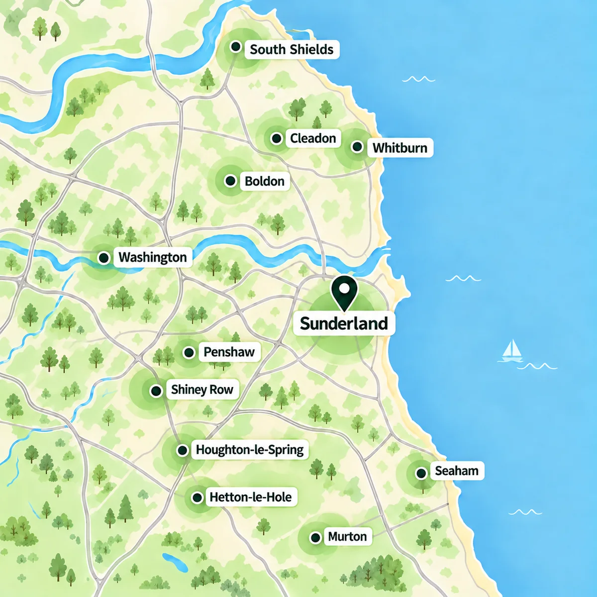

About KJP
Local work. Thoughtfully done.
KJP Landscapes & Groundworks brings over 20 years of trade experience to practical outdoor projects for homeowners in Sunderland and across the surrounding Tyne and Wear area.
Who we are
About Us
KJP Landscapes & Groundworks provides professional landscaping and groundworks services for homeowners looking to improve their gardens and outdoor spaces. Our services include paving, patios, fencing, decking, turf, artificial grass, drainage, concrete work, raised beds and general groundworks.
With over 20 years of experience in the trade, we provide reliable workmanship, practical solutions and a high-quality finish. From smaller garden improvements to complete landscaping projects, we focus on creating outdoor spaces that are practical, attractive and built to last.
Sunderland & Tyne and Wear
Areas We Cover
Based in Sunderland, we provide landscaping and groundworks services across the wider Tyne and Wear area.
Our main service areas include Houghton-le-Spring, Hetton-le-Hole, Seaham, Murton, Shiney Row, Penshaw, Washington, West Boldon, East Boldon, Cleadon, Whitburn and South Shields. If you are looking for a landscaper or groundworks contractor in these areas or nearby, get in touch to discuss your project.
